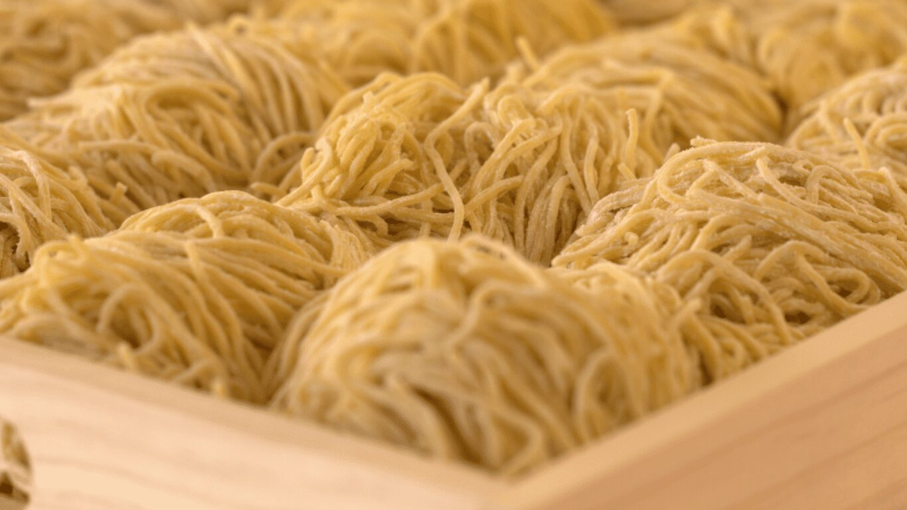
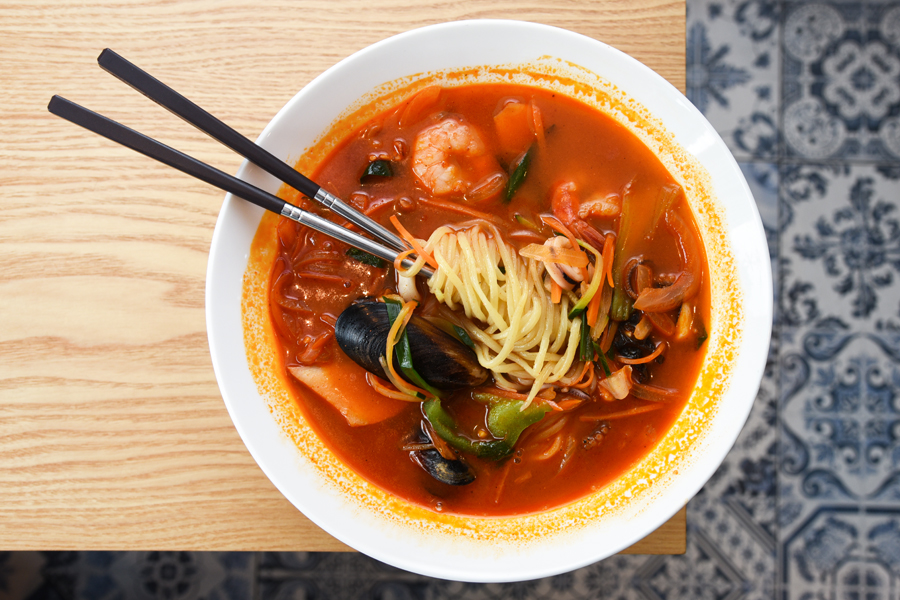

Jjamppong/짬뽕 (Korean Spicy Seafood Noodle Soup)
Prep Time

Prep Time: 20 minutes
Cook Time: 15 minutes
Total Time: 35 minutes
Serving(s): 3
Ingredients
Main
- 50g summer zucchini (thinly sliced)
- 2 shiitake mushrooms (cleaned thoroughly, stems removed and thinly sliced)
- 120g cabbage (thinly sliced)
- 35g brown onion (thinly sliced)
- 6 mussels (or more, cleaned thoroughly)
- 6 littleneck clams (or more, cleaned thoroughly)
- 6 large prawns (or more, head & shells removed with tail left on, thoroughly cleaned)
- 6 squid rings
- 450g fresh Korean-Chinese style noodles (or thin or ramen noodles)
- 20g baby spinach (or baby bok choy)
Chili Oil Seasoning
- 3 Tbsp Korean chili oil or neutral cooking oil
- 3 Tbsp Korean chili flakes (gochugaru, can be adjusted to your taste the more the merrier)
- 1 Tsp minced garlic
- 1 Tsp minched ginger
- 20g green onion (white part)
Soup Base
- 1 Tbsp rice wine
- 2 Tbsp soy sauce
- 4 3/4 cups Korean soup stock || water
- 1/4 Tsp fine sea salt (can adjust to your taste)
- Black pepper (to your liking)
Now, the Process...
Instructions
- Prehead a work (or large deep pot) on low heat until heated. Add oil, Korean chili flakes, minced garlic, minced ginger and green onion and stir constantly for a minute or two. Be mindful not to burn the chili paste as this can give a bitter taste.
- Turn the heat up to medium and add zucchini, mushrooms, cabbage and onion. Cook them until lightly wilted (for 1 to 2 minutes). Add mussels, littleneck clams, prawns and squid and stir
- Add the rice wine, soy sauce and Korean soup stock (or water). Turn the heat up to medium high. Boil the soup while covered until all ingredients are cooked through (about 8 minutes) while avoiding overcooking. Remove the cover and add salt along with a few sprinkles of black pepper. Add baby spinach just before serving. If using baby bok choy, you might have to cook a litle longer.
- While the soup is boiling (step 3), cook the noodles in boiling water following the manufacturer's instructions. Drain and rinse the noodles brielfy in cold water. (Step 3 and 4 should be completed around the same time.
- Divide the noodles, seafood, and the soup between three soup bowls. Serve immediately.
| Macronutrients |
Unit (Amount) |
| Calories |
681kcal |
| Carbohydrates |
101g |
| Protein |
29g |
| Fat |
19g |
| Saturated Fat |
1g |
| Cholesterol |
42mg |
| Sodium |
2788mg |
| Potassium |
455mg |
| Fiber |
12g |
| Sugar |
15g |
| Vitamin A |
3160IU |
| Vitamin C |
23.7mg |
| Calcium |
84mg |
| Iron |
3.3mg |

This is going to be the REFERENCE TO THE REAL RECIPE!